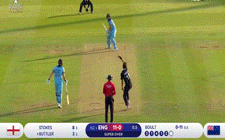

In Baseball, you just hit the all and run around making homeruns. Players are given 3 chances, which doesn't have as much intensity as cricket.
"Strike One, Miss!"
"Strike Two, Miss!"
"Strike Three, Miss!"
This could be the case why many people deem the sport as boring, or the most boring sport of all sports. Baseball used to be eminently admired. Today, the views are diminishing and many people are condemning the sport. Baseball is climbing down the ladder to the least viewed sports in the world.
Cricket has way more play than that. There are 11 players in each team. The field of a cricket field is vast. Stadiums look luxurious, especially those in United Arab Emirates. Cricket is loved by over 2.5 billion people in the world. There are 11 positions in cricket. The predominant positions are batsman, bowler, and wicketkeepers. The speed of a cricketball is thrown at 95-100 mph. One slip for the batsman can cost an out. The batsman needs to stay firm and focused. When a batsman hits a ball up high, it can bestow a 6 for the team. Which is the highest score you can earn with just 1 hit. The 2nd highest score is a 4. After that comes 3, 2, and of course, 1. Cricket may seem easy to play, however, it's really difficult. Standing in 1 position as a batsman is really tough. So is bowling a cricket ball from practically 60 feet. This makes cricket a more demanding sport thqan baseball.
